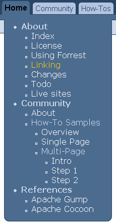

Menus and Linking
Introduction
This document describes Forrest's internal URI space; how it is managed with the "site.xml" configuration file, how menus are generated, and how various link schemes (site: and ext:) operate. An overview of the implementation is also provided.
While reading this document, bear in mind that the Cocoon Sitemap is handling the processing. The sitemaps are resolving the site: URIs and then matching them to determine how to process each. In general, you can use the power of the Cocoon Sitemap to handle certain difficult linking and menu situations (for example see this FAQ).
site.xml
The "site.xml" configuration file is what we would call a "site map" if Cocoon hadn't already claimed that term. The "site.xml" is a loosely structured XML file, acting as a map of the site's contents. It provides a unique identifier (an XPath address) for "nodes" of information in the website. A "node" of site information can be:
- A category of information, like "the user guide". A category may correspond to a directory, but that is not required.
- A specific page, e.g. "the FAQ page"
- A specific section in a page, e.g. the "general" section of the FAQ page (identified by id="general" attribute)
In addition to providing fine-grained addressing of site info, the site.xml allows metadata to be associated with each node, using attributes or child elements. Most commonly, a label attribute is used to provide a text description of the node.
There are currently two applications of site.xml
- Menu generation
- site.xml is used to generate the menus for the HTML website.
- Indirect linking
- site.xml provides a basic aliasing mechanism for linking, e.g. one can write <link href="site:changes"> from anywhere in the site, and link to the "changes" information node (translated to changes.html). More on this below.
Here is a sample site.xml ...
<?xml version="1.0"?>
<site label="Forrest" href="" tab="home"
xmlns="http://apache.org/forrest/linkmap/1.0">
<about label="About">
<index label="Index" href="index.html"/>
<license label="License" href="license.html"/>
<your-project label="Using Forrest" href="your-project.html">
<new_content_type href="#adding_new_content_type"/>
</your-project>
<linking label="Linking" href="linking.html"/>
<changes label="Changes" href="changes.html"/>
<todo label="Todo" href="todo.html"/>
<live-sites label="Live sites" href="live-sites.html"/>
</about>
<community label="Community" href="community/" tab="community">
<index label="About" href="index.html"/>
<howto-samples label="How-To Samples" href="howto/" tab="howto">
<overview label="Overview" href="index.html"/>
<single-page label="Single Page" href="v10/howto-v10.html"/>
<multi-page label="Multi-Page" href="multi/">
<intro label="Intro" href="howto-multi.html"/>
<step1 label="Step 1" href="step1.html"/>
<step2 label="Step 2" href="step2.html"/>
</multi-page>
</howto-samples>
</community>
<references label="References">
<gump label="Apache Gump" href="http://gump.apache.org/"/>
<cocoon label="Apache Cocoon" href="http://cocoon.apache.org/"/>
</references>
<external-refs>
<mail-archive href="http://marc.theaimsgroup.com"/>
<xml.apache.org href="http://xml.apache.org/">
<commons href="commons/">
<resolver href="components/resolver/"/>
</commons>
<fop href="fop/"/>
<batik href="batik/"/>
</xml.apache.org>
<mail>
<semantic-linking href="http://marc.theaimsgroup.com/?l=forrest-dev
&m=103097808318773&w=2"/>
</mail>
<cool-uris href="www.w3.org/Provider/Style/URI.html"/>
<uri-rfc href="http://zvon.org/tmRFC/RFC2396/Output/index.html"/>
</external-refs>
</site>
As you can see, things are quite free-form. The rules are as follows:
- The root element must be "site", and normal content should be in the namespace http://apache.org/forrest/linkmap/1.0 (Feel free to mix in your own content (RDF, dublin core, etc) under new namespaces)
- Element names are used as identifiers. The "foo" in "site:foo" must therefore be a valid NMTOKEN.
- Elements with href attributes can be used as identifiers in "site:" URIs
- Relative href attribute contents are "accumulated" by prepending hrefs from ancestor nodes
- Elements without label attributes (and their children) are not displayed in the menu.
- Elements below external-refs are mapped to the "ext:" scheme. So "ext:commons/resolver/" becomes "http://xml.apache.org/commons/resolver/"
See another explained example. Also remember to look at the comprehensive example with Forrest's own documentation.
Generating Menus
Two files are used to define a site's tabs and menu (site.xml and tabs.xml). Both files are located in src/documentation/content/xdocs/
Assume that our tabs.xml looks like this:
<tabs ...>
<tab id="home" label="Home" dir=""/>
<tab id="community" label="Community" dir="community" indexfile="mailLists.html"/>
<tab id="howto" label="How-Tos" dir="community/howto"/>
</tabs>
Using the "site.xml" listed above, we would get these menus:
When using the "dir" attribute as above the value of the "indexfile" parameter is appended to the value of the "dir" attribute (together with a preceding '/'). For example, the link for the community tab above is community/mailLists.html. Note that "indexfile" defaults to "index.html" if no value is supplied. Therefore the link for the howto tab is community/howto/index.html
Tabs for External Resources
A tab can refer to an external resource by using the "href" attribute instead of the "dir" attribute. The value of "href" should be the URI of the resource you wish to link to. For example:
<tab id="apache" label="XML Apache" href="http://xml.apache.org/"/>
Unlike the "dir" attribute, the value of "href" is left unmodified by Forrest unless it is root-relative and obviously specifies a directory (ends in '/'). In which case /index.html will be added.
Selecting menu entries
Forrest decides which menu entries to display, by examining the "tab" attributes in the site.xml file. The children of all site.xml entries with a "tab" which is equal to that of the current page, are added to the menu, whilst the element itself forms the root of that part of the menu (see the "community" element in the example below). Child elements that have a different "tab" attribute value will appear in the menu for their parents, and will also form the root of a new menu for a tab with the appropriate name (see the "howto-samples" element below).
Consider our site.xml example:
<site label="Forrest" href="" tab="home"
xmlns="http://apache.org/forrest/linkmap/1.0">
<about label="About">
<index label="Index" href="index.html"/>
<license label="License" href="license.html"/>
<your-project label="Using Forrest" href="your-project.html">
<new_content_type href="#adding_new_content_type"/>
</your-project>
<linking label="Linking" href="linking.html"/>
....
</about>
<community label="Community" href="community/" tab="community">
<index label="About" href="index.html"/>
<howto-samples label="How-To Samples" href="howto/" tab="howto">
<overview label="Overview" href="index.html"/>
<single-page label="Single Page" href="v10/howto-v10.html"/>
<multi label="Multi-Page" href="multi/">
<intro label="Intro" href="howto-multi.html"/>
<step1 label="Step 1" href="step1.html"/>
...
Every site.xml node can potentially have a "tab" attribute. If unspecified, nodes inherit the "tab" of their parent. Thus everything in the <about> section has an implicit tab="home" attribute.
Say that the user is viewing the linking.html page. The <linking> node has an implicit tab value of "home". Forrest will select all nodes with tab="home" and put them in the menu.
Alternative menu selection mechanisms.
The "tab" attribute-based scheme for selecting a menu's entries is not the only one, although it is the most flexible. Here we describe a few alternatives.
Directory-based selection
In this scheme, each tab corresponds to a directory within the site. All content below that directory is included in the menu.

To use this scheme:
- Edit forrest.properties and set project.menu-scheme=directories
- Remove the "id" attributes from tabs.xml entries.
Specifying menus with book.xml
Historically, menus in Forrest have been generated from a book.xml file, one per directory. This mechanism is still available, and if a book.xml is found, it will be used in preference to the menu generated by the site.xml file. The book.xml files can use "site:" URIs to ease the maintenance burden that led to obsolescence of book.xml files. In general, however, we recommend that users avoid book.xml files.
Selecting the current tab
The tab selection algorithm is quite simple: the tab with the "id" which matches that of the current site.xml node is "selected". However the interaction of tabs.xml and site.xml while powerful, can be complex to establish.
Configuring the interaction between tabs.xml and site.xml
This is a collection of tips to assist with getting your menus and tabs to properly display.
- See the various notes above, not repeated in this list of tips.
- View your site's abs-menulinks pipeline in a browser. This is part of the internal Cocoon machinery, but like other sitemap resources, it is useful to view them to assist with debugging.
- The Forrest website also accompanies your software release in the site-author directory, so inspect its tabs.xml and site.xml to see how it is done. Also see the 'forrest seed site' example. It is not as complex as the Forrest website.
- When you are fiddling with your attributes, change one thing at a time and document what you have changed.
- The value of the tab @id attribute cannot begin with a digit. Likewise, element names in tabs.xml and site.xml cannot begin with a digit.
- Add label attributes to site.xml elements to make the menus show. With nested elements in site.xml if the outer element does not have a label attribute then the inner elements will not be displayed.
- To cause tabs and menu items to be highlighted, there need to be corresponding elements in site.xml that have href attributes which match the relevant path. See email explanation.
- When the tab points to a directory, then to make the tab highlighted when selected, you need an element which matches index.html within the group of elements that define the menus for this tab in the site.xml file. That element can be without a label attribute, so that it doesn't display as a menu item. However doing that causes that tab's menus to be collapsed.
- Q: The tab link in my site assumes that 'index.html' is present in the linked-to directory. How do I fix this? A: In tabs.xml use @href instead of @dir attribute and omit the trailing '/'. Which file to serve is then a concern of the sitemap. See more at the FAQ.
Table of Contents Generation
Each page can have an automatically generated table of contents. This is created from the titles of each section in your xdoc. By default only sections up to two levels deep are included and the table of contents is displayed at the top of the page. However, you can configure this behaviour in src/documentation/skinconf.xml using the "toc" element.
<toc level="2" location="page"/>
- level - is the depth to which you want your table of contents to go. Setting it to "3" will therefore include sections nested to 3 levels. Setting this to "0" will result in no table of contents being generated.
-
location - indicates where you
want the table of contents to be rendered. It can be set to one of
three values:
- page - the table of contents will be rendered at the top of the body of your page
- menu - the table of contents will be rendered in the menu to the left of the body of the page
- menu, page - table of contents will be rendered in both the page and the menu positions
Linking systems
Direct linking
In earlier versions of Forrest (and in similar systems), there has been only one URI space: that of the generated site. If index.xml wants to link to todo.xml then index.xml would use
<a href="todo.html">to-do list<a>
The theoretical problem with this is that the content producer should not know or care how Forrest is going to render the source. A URI should only identify a resource, not specify it's type [mail ref] and [cool URIs]. In fact, as Forrest typically renders to multiple output formats (HTML and PDF), links in one of them (here, the PDF) are likely to break.
Indirect linking
Forrest's solution is simple: instead of <a href="todo.html">, write <a href="site:todo"> where:
- site
- is a URI "scheme"; a namespace that restricts the syntax and semantics of the rest of the URI [rfc2396]. The semantics of "site" are "this identifier locates something in the site's XML sources".
- todo
- identifies the content in todo.xml by reference to a "node" of content declared in site.xml
We call this indirect, or semantic linking because instead of linking to a physical representation (todo.html), we've linked to the "idea" of "the todo file". It doesn't matter where it physically lives; that will be sorted out by Forrest.
Resolving site: URIs
So how does "site:todo" get resolved? A full answer is provided in the implementation section. Essentially, the "todo" part has "/site//" prepended, and "/@href" appended, to form the string "/site//todo/@href". This is then used as an XPath expression in site.xml to identify the string replacement, in this case "todo.html"
Thus by modifying the XPath prefix and suffix, almost any XML format can be accommodated.
Notice that the "//" allows us any degree of specificity when linking. In the sample site.xml above, both "site:new_content_type" and "site:about/your-project/new_content_type" identify the same node. It is up to you to decide how specific to make links. One nice benefit of link "ambiguity" is that site.xml can be reorganized without breaking links. For example, "new_content_type" currently identifies a node in "your-project". By leaving that fact unspecified in "site:new_content_type" we are free to make "new_content_type" its own XML file, or a node in another file, in another category.
ext: URIs: linking to external URLs
The "ext:" scheme was created partly to demonstrate the ease with which new schemes can be defined, and partly for practical use. The "ext:" URIs identify nodes in site.xml below the <external-refs> node. By convention, nodes here link to URLs outside the website, and are not listed in the menu generated from the site.xml file.
Here is a site.xml snippet illustrating "external-refs":
<site>
...
<external-refs>
<mail-archive href="http://marc.theaimsgroup.com"/>
<xml.apache.org href="http://xml.apache.org/">
<commons href="commons/">
<resolver href="components/resolver/"/>
</commons>
</xml.apache.org>
...
</external-refs>
</site>
As an example, <a href="ext:commons/resolver"> generates the link http://xml.apache.org/commons/components/resolver/
The general rules of site.xml and "site:" linking apply. Specifically, the "@href" aggregation makes defining large numbers of related URLs easy.
Theory: source URIs
The "site:" URIs like "site:todo" are examples of "source" URIs, in contrast to the more usual foo.html style URIs, which we here call "destination" URIs. This introduces an important concept: that the "source" URI space exists and is independent of that of the generated site. Furthermore, URIs (i.e. links) are first-class objects, on par with XML documents, in that just as XML content is transformed, so are the links. Within the source URI space, we can have all sorts of interesting schemes (person: mail: google: java: etc). These will all be translated into plain old "http:" or relative URIs in the destination URI space, just like exotic XML source formats are translated into plain old HTML in the output.
Future schemes
So far, the "site:" and "ext:" schemes are defined. To give you some ideas on other things we'd like to implement (and wouldd welcome help to implement) here are a few possibilities.
| Scheme | Example "From" | Example "To" | Description |
|---|---|---|---|
| java | java:org.apache.proj.SomeClass | ../../apidocs/org/apache/proj/SomeClass.html | Links to documentation for a Java class (typically generated by javadoc). |
| mail::<Message-Id> | http://marc.theaimsgroup.com?t=12345678 | Links to an email, identified by its Message-Id header. Any mail archive website could be used. | |
| search | search:<searchterm> | http://www.google.com/search?q=searchterm | Link to set of results from a search engine |
| person | person:JT, person:JT/blog etc | mailto:jefft<at>apache.org, http://www.webweavertech.com/jefft/weblog/ | A "person:" scheme could be used, say, to insert an automatically obfuscated email address, or link to a URI in some way associated with that person. |
There are even more possibilities in specific environments. In an intranet, a "project:XYZ" scheme could identify company project pages. In a project like Apache Ant, each Task could be identified with task:<taskname>, e.g. task:pathconvert.
Concept
The "site:" scheme and associated ideas for site.xml were originally described in the 'linkmap' RT email to the forrest-dev list (RT means 'random thought'; a Cocoon invention). Only section 2 has been implemented, and there is still significant work required to implement the full system described. In particular, there is much scope for automating the creation of site.xml (section 4). However, what is currently implemented gains most of the advantages of the system.
Implementation
Full details on the implementation of link rewriting and menu generation are available in the Sitemap Reference